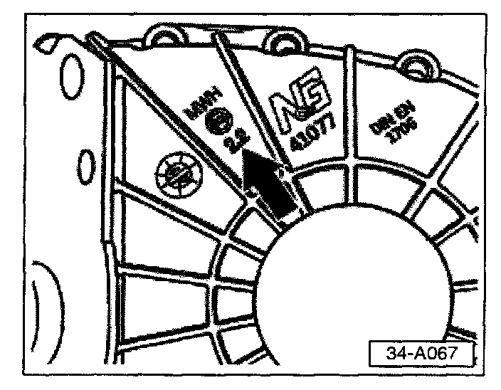
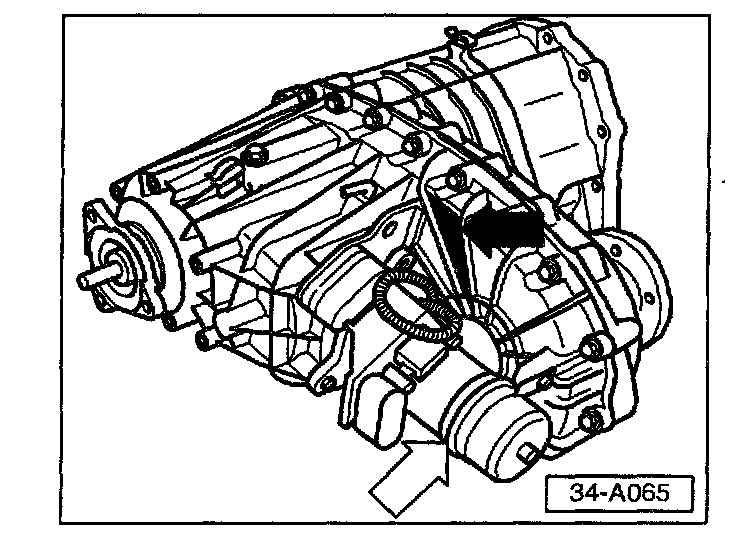
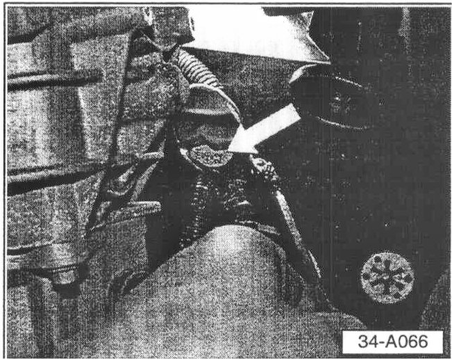
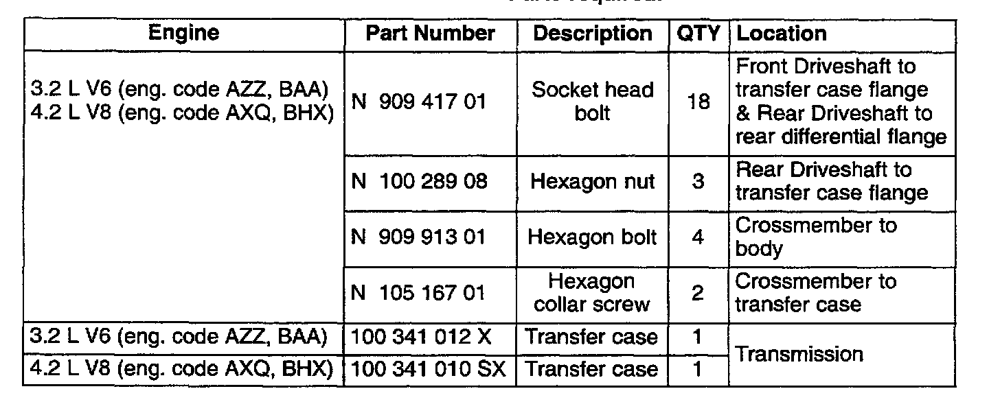
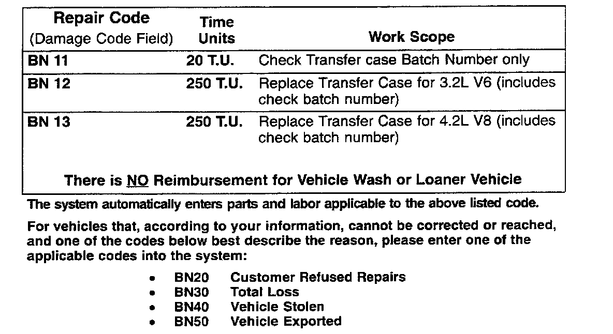

Campaign - Transfer Case Replacement
Group: 34Number: 04-02
Date: June 21, 2004
Subject:
Transfer Case, Checking/Replacement (BN)
Model(s):
Touareg 3.2L V6 (eng. code AZZ, BAA) 2004
Touareg 4.2L V8 (eng. code AXO, BHX)
ATTENTION!
This Technical Bulletin is in effect for 15 months from date of publication as listed above. After that date, this Technical Bulletin will expire and no longer be in effect.
Condition
Transfer case may require replacement depending on production batch number.
Production
For vehicles from 4D014234 to 4D038730 with transfer case batch number 2.2
Service Requirements:
Vehicle must meet ALL of the following criteria.
1 - Procedure is valid only for vehicles that show the BN code in the OTIS View Campaign inquiry screen on the day of repair.
2 - Vehicle must be within the Limited New Vehicle Warranty.
3 - Procedure must be performed within the allotted time frame stated in this Technical Bulletin.
Note:
Procedure must also be performed on applicable vehicles in Dealer inventory

Procedure:
With vehicle properly raised on lift.

- Check for transfer case production batch number (location at arrow) using the following (see below).

- Using an inspection mirror and an additional light source locate the batch number (white arrow) by looking over the top of the Differential motor (white arrow in illustration 34-A065).
Transfer case production batch number (arrow).
If production batch number is NOT 2.2:
- No further work is required.
If production batch number is 2.2:
- Replace transfer case (see Repair Manual Group 34 - Manual Transmission Controls, Housing, Transfer case, removing and installing").

Parts required:
Note:
10 Bolts securing transfer case to transmission do not need to be replaced as described in Repair Manual information.
CAUTION!
Part numbers listed in this bulletin are for reference only. Always check with your Parts Dept. for the latest parts information
Required Vehicle Update Technical Bulletin Time Requirements/Reimbursement
To ensure prompt and proper payment, be sure to enter, immediately upon completion of the repair work, the applicable reimbursement code listed below.
Claims will only be paid for vehicles that show the BN code in the OTIS View Campaign inquiry screen on the day of repair.

BN Data Entry Procedure Use Claim Type RC
Additional Required Vehicle Update Technical Bulletins
Some of the affected vehicles may be involved in additional Required Vehicle Update Technical Bulletins. Please check your OTIS View Campaign inquiry screen so that any additional required work can be done simultaneously.
Required Vehicle Update Technical Bulletin Verification
For verification, always check the OTIS View Campaign inquiry screen. The OTIS system is the only binding inquiry and verification system; other Systems are not valid and may result in non-payment of a claim.
Help for Claim Input
For questions regarding claim input, contact your appropriate Warranty
Claim specialist.
Please do not contact the Campaign Helpline regarding claim input.
Required Customer Notification
Inform your customer in writing by recording on the Repair Order any and all work that was conducted on the vehicle, including any and all updates completed under this Technical Bulletin.